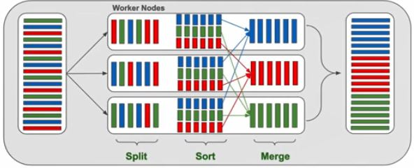
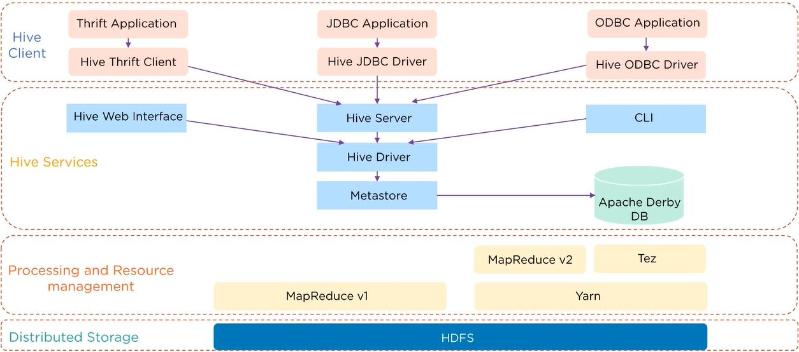
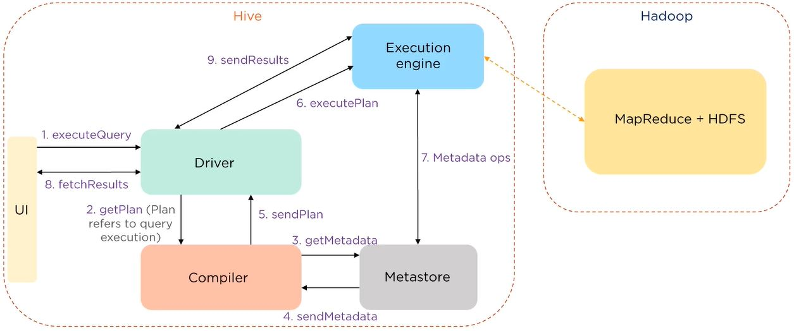

Hadoop for Big Data
Intro
In this section I compare Data Warehouse and Big Data. Further I focuse on Big Data available technology.
Data Warehouse:
- Is the architecture of gaining the information by:
1. Extracting data from one or more homogeneous or heterogeneous data sources.
2. Transforming the data.
3. Loading that into a data repository.
4. Doing data analysis.
5. Making business decisions.
6. Further reporting.
- Data repository generated from the process as above is nothing but the data warehouse.
- In fact, it is a read-only copy of some data around the enterprise that is cleaned and gathered in one place.
Big Data:
- Stands on 3Vs:
- Volume which defines amount of data coming from different sources.
- Velocity which refers to the speed of data processing.
- Variety which stands for a numerous of data types. - Comparison to Data Warehouse:
Big Data Data Warehouse A technology to store and manage large amounts of data. Data Warehouse is an architecture of data consolidating and storing or data repository itself. The purpose of storing data is not defined in advance. Designed with clear intention to make informed decisions noSQL data storage. Relies on SQL. Structured, non-structured or semi-structured data. Only structured data. Even houndreds of data sources. Several data sources possible. Takes real-time data streams as an input. Takes data batches as an input. ELT - ingest, organize, store. ETL - ingest, store, organize later. Only small part of data used for the analysis, rest of data unused. 100% data loaded is used for the analysis. Time-efficient when fetching data. Time-consuming when fetching data.
Hadoop as Big Data technology:
- Open-source software using local machine or network of machines to solve big data problems efficiently using the MapReduce programming model.
- Distributed storage and distributed processing of big datasets on computer (nodes) cluster(s).
- Distributed storage means that Hadoop splits files into large blocks and distributes them across nodes in a cluster. Hadoop then transfers compressed code into nodes to process data in parallel. In this system, a single node process only data that it has access to.
- Overall processing data runs in parallel manner setting CPUs (processors) of all nodes in the clusters to process data in parallel.
- With its built-in mechanizm, keeps replicating the data across many nodes and retriving once some cluster fails.
- Hadoop framework is written in Java programming language - requires Java installation when setting up.
- Only batch data processing, no for real-time data strams processing.
Hadoop architecture:
- Hadoop Distributed File System (HDFS) - responsible for data sotrage across multiple clusters (machines).
- There is also Local FS when you want to run your code on local single machine.
- Hadoop YARN (Yet Another Resource Negotiator) - cluster manager that manages resources splitting tasks across processors of clusters.
- MapReduce - mechnizm responsible for processing data. It consists of 2 components:
- Mapper - maps each line of raw data into key-valye paris,
- Reducer - aggregates values for the same keys. - MapReduce visualization:

MapReduce workflow:
- Mapping text:
'John likes to watch movies. Mary likes movies too.'
by splitting words and assigning 1 values to each, getting (key, valye) paris:
John, 1
likes, 1
to, 1
watch, 1
movies, 1
Mary, 1
likes, 1
movies, 1
too, 1 - Shuffling and sorting key, value pairs:
John, 1
likes, (1,1)
to, 1
watch, 1
movies, (1,1)
Mary, 1
too, 1 - Reducing pairs by key name:
(John, 1)
(likes, 2)
(to, 1)
(watch, 1)
(movies, 2)
(Mary, 1)
(too, 1)
Hadoop as a name for whole ecosystem:
- The term Hadoop is often used for both base modules and sub-modules and also the ecosystem that consists of additional software's packages that can be installed on top of or alongside Hadoop:
- Apache Pig,
- Apache Hive,
- Apache Spark,
- Apache ZooKeeper,
- more... - Each of additional packages provides richer user interface on top of Hadoop that facilitates building MapReduce models with non-Java languages for instance: SQL like language (Apache Hive, Apache Pig) or pure Python (PySpark extending Apache Spark).
Apache Hive:
- Gives an SQL-like interface (HiveQL) to query data stored in various databases and file systems that integrate with Hadoop.
- Hive integrates HiveQL into the underlying Java without the need to implement queries in the low-level Java API.
- In short, user sends HiveQL queries which are converted to MapReduce tasks thata are consumed by Hadoop MapReduce system.
- Hive architecture:

source: simplilearn
- Hive client supports different client applications in different laguages for sending queries.
- Hive client's request are being send to Hive server. Queries can be executed with using Hive Web Interface of CLI.
- Hive driver is responsible for all the queries that were submitted. It passes query to compiler that checks it, then passes to optimizer that optimizes execution plan, and gives query to executor.
- Metastore is a repository for Hive metadata.
- MapReduce is being used to process the query on top of HDFS. - Data flow:

source: simplilearn
- execution engine acts like a bridge between Hive and Hadoop to process a query. - Hive's data model:
- Tables like in relational db.
- Partitions that group tables of the same kind of data due to partition key.
- Buckets where partitions are devided for a better quering. - Hive's execution modes:
- Local Mode - when the data is small or one datanode present. Often used for testing before processing big data loads.
- MapReduce Mode - when multiple datanodes work and large data needs to be processed. - Hive's strong points:
- even though it's non-realtional data storage, data is being kept in form of tables,
- takes a Java knowledge off a user,
- we can access data with SQL-like lanugage instead of coding scripts,
- data can be queried by multipole users at the same time,
- scalable at low cost,
- write once and read many times,
- data size in petabytes. - Hive's weaknesses:
- only batch data oriented,
- it is desied to scale, it's not designed to be fast.
Features
App includes following features:
Demo
MapReduce:
- Mapper:
Mapping: each line -> (key, value) e.g.:
((category,status), 1))
- where (category,status) is a key and 1 is a value - Reducer:
line 1: ((key_part_1, key_part_2), 1)
line 2: ((key_part_1, key_part_2), 1)
- for both lines the key are consisted with to parts
- for both lines the key are the same
aggregating both lines: ((key_part_1, key_part_2), 2)
Setup
Python libraries required:
- ...
Hadoop installation reuired:
- Download it form hadoop.apache.org.
- Unizp to folder on C driver.
- Rename directory to hadoop.
- Create dictionary in hadoop:
.\data\datanode
.\data\namenode - Go to file core-site.xml and add below:
<configuration>
<property>
<name>fs.defaultFS</name>
<value>hdfs://localhost:9000</value>
</property>
</configuration> - Go to file mapred-site.xml and add below:
<configuration>
<property>
<name>mapreduce.framework.name</name>
<value>yarn</value>
</property>
</configuration> - Go to yarn-site.xml and add below:
<configuration>
<property>
<name>yarn.nodemanagaer.aux-services</name>
<value>mapreduce_shuffle</value>
</property>
<property>
<name>yarn.nodemanager.auxservices.mapreduce.shuffle.class</name>
<value>org.apache.hadoop.mapred.ShuffleHandler</value>
</property>
</configuration> - Go to hdfs-site.xml and add below:
<configuration>
<property>
<name>dfs.replication</name>
<value>1</value>
</property>
<property>
<name>dfs.namenode.name.dir</name>
<value>file:/C:/hadoop/data/namenode</value>
</property>
<property>
<name>dfs.datanode.data.dir</name>
<value>C:\hadoop\data\datanode</value>
</property>
</configuration> - Go to hadoop-env.cmd and update below:
set JAVA_HOME=C:\jdk1.8.0_261 - Add Hadoop directory to environment variables for user:
HADOOP_HOME
C:\hadoop\bin - Add below dirs to environment variables for system:
C:\hadoop\bin
C:\hadoop\sbin - Replace C:\hadoop\bin with bin from HadoopConfiguration-FIXbin.rar.
- Go to CMD and check if it works with command:
hadoop version
hdfs namenode -format - Run Hadoop with command:
C:\hadoop\sbin>start-all.cmd - You can check HDFS (namenode and datanode) under port:
http://localhost:9870 - Making directions in HDFS:
hdfs dfs -mkdir /dir_name - Listing all directories in HDFS:
hdfs dfs –ls / - Copying local files into HDFS
hdfs dfs -copyFromLocal C:\Users\U742905\Downloads\test.txt /sample